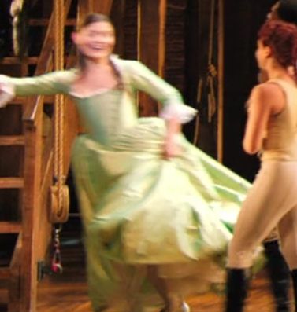

"This Congress does not speak for me-"
"My dog speaks more eloquently than thEE!"

"Look, when Britain taxed our tea, we got frisky. Imagine what gon' happen when you try to tax our whiskey!"

"While we're talking, let me offer you some free advice: Talk. Less."

"They're playing a dangerous game."
"But strangely your mANGE is the sAME!"

"It was my parents' dying wish before they passed."
"YOU'RE AN ORPHAN! OF COURSE! I'M AN ORPHAN! GOD, I WISH THERE WAS A WAR-"

"Watch this obnoxious, arrogant, louDMOUTH BOTHER-"

"Burr, you disgust me."
"Ah. So you've discussed me."

"Are my answers to your satisfaction?!"
"...My God.

"Peggy confides in me, Angelica tried to take a bite of me-"

"We made a treaty with a king who's head is now in a basket. Would you like to take it out and ask it? 'Uh, should we honour our treaty, King Louis' head?' 'Uhh, do whatever you want, I'M SUPER DEAD!'"

"DON'T MODULATE THE KEY THEN NOT DEBATE WITH ME!"

"Sir, do you want me to run the Treasury or State Department?"
"...Uh, Treasury."
"Heh. Let's go."

"Where is this happening?"
"Across the river in Jersey."
"Everything in legal in New Jersey...

"Burr."
"Sir?"
"Close the door on youR. WAY. OUT!"